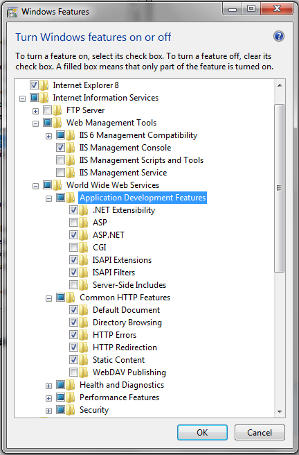

I'm running Windows 7 Ultimate (64 bit) using Visual Studio 2010 RC. I
recently decided to have VS run/debug my apps on IIS rather than the dev
server that comes with it.
However, every time I try to run an MVC app, I get the following error:
HTTP Error 403.14 - Forbidden The Web server is configured to not list the
contents of this directory. Detailed
Error Information
Module DirectoryListingModule
Notification ExecuteRequestHandler
Handler StaticFile Error
Code 0x00000000 Requested
URL http://localhost:80/mySite/
Physical Path C:\myProject\mySite\
Logon Method Anonymous Logon
User Anonymous
I placed a default.aspx file in the directory and I received the following
error:
HTTP Error 500.21 - Internal Server Error Handler "PageHandlerFactory-
Integrated" has a bad module "ManagedPipelineHandler" in its module list
Are there any other steps I forgot to take to get this working?
Notes: I installed IIS 7.5 after installing VS 2010 RC. I used the built-in
"Create Virtual Directory" button under the "Web" tab in the MVC project's
"Properties" in Visual Studio 2010. I made sure that the application is using
the ASP.NET 4 App Pool.
Below are the installed features of IIS I have.

Answer
ASP.NET 4 was not registered in IIS. Had to run the following command in the
command line/run
32bit (x86) Windows
%windir%\Microsoft.NET\Framework\v4.0.30319\aspnet_regiis.exe -ir
64bit (x64) Windows
%windir%\Microsoft.NET\Framework64\v4.0.30319\aspnet_regiis.exe -ir
Note from David Murdoch's comment:
That the .net version has changed since this Answer was posted. Check which
version of the framework is in the %windir%\Microsoft.NET\Framework64
directory and change the command accordingly before running (it is currently
v4.0.30319)
Suggest
One more thing to make sure you have is the following set in your web.config:
<system.webServer>
<modules runAllManagedModulesForAllRequests="true"/>
</system.webServer>